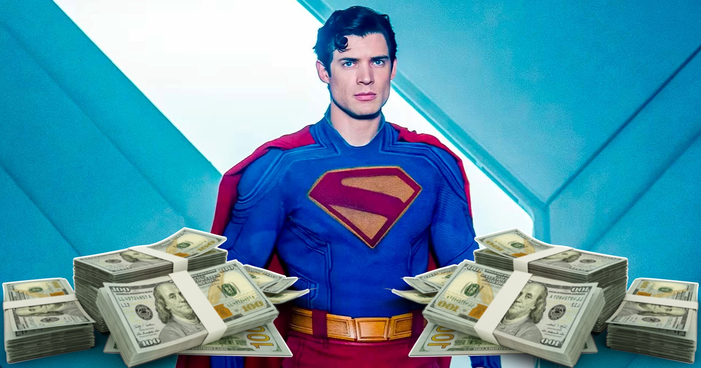

Superman da lucro de 125 milhões de dólares para Warner
Em uma matéria em que elogia a atual fase da Warner, recheada de grandes sucessos de bilheteria, o site Variety afirma que o filme Superman (2025) trará um lucro de cerca de 125 milhões de dólares para a empresa.
Vale dizer que o filme conseguiu arrecadar 614 milhões de dólares ao redor do mundo, sendo 353 milhões provenientes apenas dos Estados Unidos. O custo de produção do filme é estimado em 225 milhões, com um orçamento em marketing que deve chegar à casa dos 200 milhões de dólares, deixando realmente uma margem de lucro próxima ao número apontado pelo site.
Superman está agora disponível para compra e aluguel digital no Brasil. O filme também chegará em breve ao catálogo da HBO Max.Fonte: Variety
Veja também: